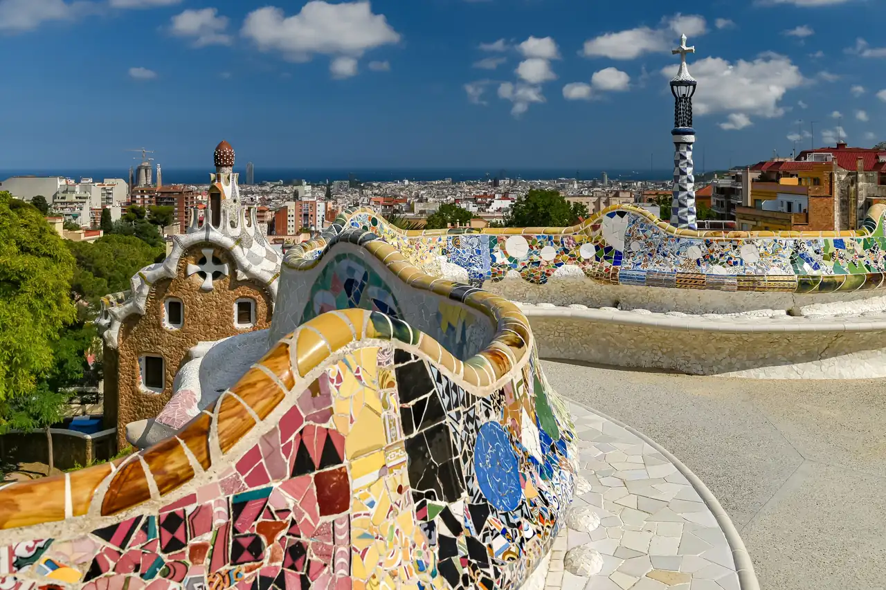
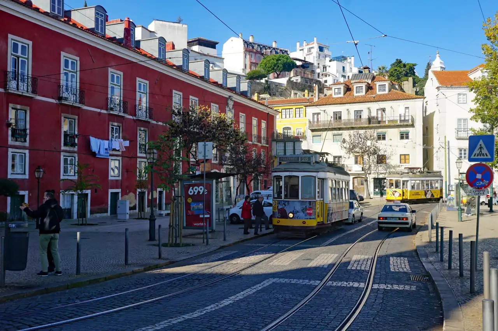

Touche le hublot, ou Bernard. Clique sur le hublot, ou sur Bernard.
bagage
Parle dès l’atterrissage.
Les phrases de survie pour voyager : espagnol, italien, portugais, anglais.
- Hors ligne
- Sans compte
- Sans pub
Ta première phrase au café
Écoute-la, et lis sa prononciation écrite à la française.
-

Photo : Jorge Franganillo, CC BY 2.0, recadrée -
Photo : Rabax63, CC BY-SA 4.0, recadrée -

Photo : Mariordo (Mario Roberto Durán Ortiz), CC BY-SA 4.0, recadrée -
Photo : Jo Atkins, CC BY-SA 2.0, recadrée
Comment ça marche
-
Ton voyage
Choisis ta destination et ta date de départ : Bagage prépare les phrases de ce voyage.
-
Quelques minutes par jour
Des exercices courts, qui reviennent juste avant que tu oublies.
-
Sur place
Ta carte de survie s’affiche même sans réseau : tes allergies et l’adresse de ton hôtel, dans la langue du pays.
Embarquement immédiat
Bernard, un bernard-l’ermite, t’envoie une carte postale à chaque étape de ton voyage.
Sans compte : ce que tu apprends reste sur ton téléphone.